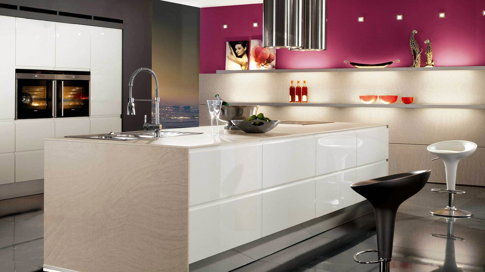

Серый цвет на кухне — с чем его сочетать?
Есть расхожее интерьерное правило: всё, что покупается в дом надолго, должно быть белым, серым или деревянным — а цвет придёт вместе с бытом. Соглашусь. Другой вопрос: какой именно серый стоит взять для кухни? Какой интенсивности, на каких фактурах и материалах его применить? — Объясню, как объясняю своим заказчикам.
1. Серые стены и серая кухня — будет очень бледно?
Нет, если правильно обыграть это сочетание, использовать разные оттенки и фактуры — например, бетон с гладкими материалами. В моде всё брутальное и «грязноватое», к тому же, текстура у бетона и сама по себе не скучная: неоднородность материала и разводы создают своеобразный рисунок. Кроме того, бетонный серый легко уравновесить белыми и чёрными оттенками.
Если брутальность бетона вам не близка, а идея тотально серого интерьера кажется неинтересной, обратите внимание на классическое противопоставление матовых и глянцевых материалов. В проекте на фото лаконичная серая кухня оформлена как единый крупный объём, но разнообразия интерьеру придают контрастная глянцевая вставка фартука и беспроигрышные дополнительные оттенки —тёмная древесина и белизна плафонов.
2. Какой лучше взять — серый или бежевый?
Говоря о кухне в нейтральных тонах, наши заказчики обычно имеют в виду либо серую, либо бежевую гамму — а ведь эти оттенки можно успешно сочетать в рамках одного помещения. Очень удачный пример на фото: в дизайне гарнитура обыграли два оттенка серого, а стены и фартук оформили в бежевых тонах. Кстати, обеденная группа тоже часть кухни, и здесь она стала полноценным продолжением композиции: сероватую поверхность стола «подружили» со стульями разных древесных оттенков.
| Heading 1 | Heading 2 | Heading 3 |
|---|---|---|
| Cell 1 | Cell 2 | Cell 3 |
| Cell 1 | Cell 2 | Cell 3 |
| Cell 1 | Cell 2 | Cell 3 |
Говоря о кухне в нейтральных тонах, наши заказчики обычно имеют в виду либо серую, либо бежевую гамму — а ведь эти оттенки можно успешно сочетать в рамках одного помещения. Очень удачный пример на фото: в дизайне гарнитура обыграли два оттенка серого, а стены и фартук оформили в бежевых тонах. Кстати, обеденная группа тоже часть кухни, и здесь она стала полноценным продолжением композиции: сероватую поверхность стола «подружили» со стульями разных древесных оттенков:
- Черная пантера
- Сонный лес
- Кипарисовая роща
Наши заказчики порой отказываются от серого, потому что считают его мрачным — но дело, конечно, не в цвете, а в его сочетании с другими оттенками. Разве выглядит тускло серый в сочетании с жёлтым? Проект на фото смотрится, напротив, очень жизнерадостно. Обратите внимание, что композиция кухни симметрична, и серые створки расположены по углам, а светлые — по центру: это распределение помогает сохранить визуальную лёгкость интерьера.